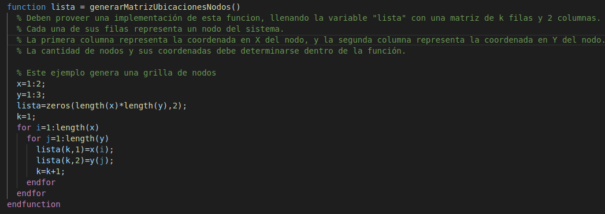
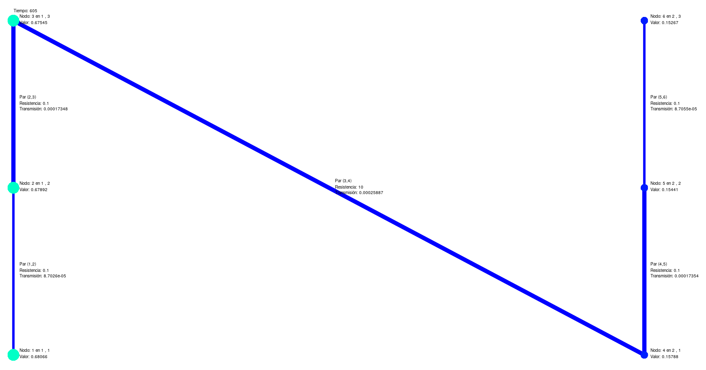
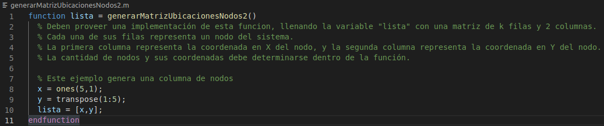
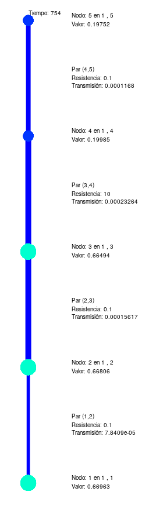

Esta función debe generar una matriz de k filas y 2 columnas.
Cada una de sus filas representa un nodo del sistema.
La primera columna representa la coordenada en X del nodo, y la segunda columna representa la coordenada en Y del nodo.
La cantidad de nodos y sus coordenadas debe determinarse dentro de la función.
Se la llama desde la linea 71 del archivo TableroQuimico.m
Ejemplo archivo generarMatrizUbicacionesNodos.m:
Matriz de salida del archivo generarMatrizUbicacionesNodos.m en el ejemplo inicial:
M = [1, 1; 1, 2; 1, 3; 1, 4; 1, 5]
Ejemplo archivo generarMatrizUbicacionesNodos2.m:
Matriz de salida del archivo generarMatrizUbicacionesNodos2.m:
M = [1, 1; 1, 2; 1, 3; 1, 4; 1, 5]
Ejemplo de salida del archivo generarMatrizUbicacionesNodos2.m:
